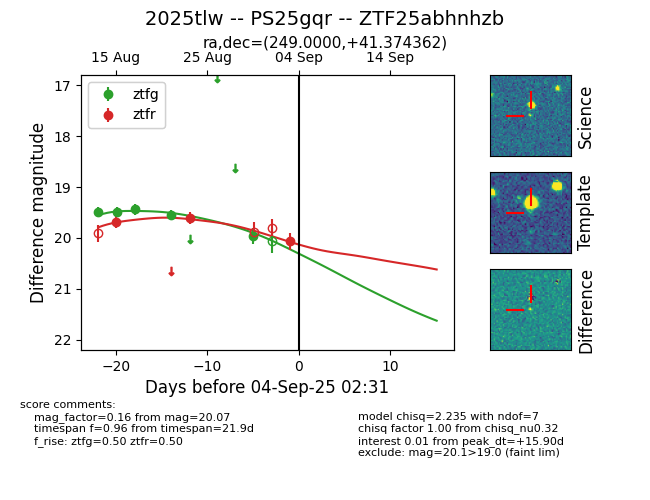

Target 2025tlw at 2025-08-21 09:29, see:
FINK: fink-portal.org/ZTF25abhnhzb
Lasair: lasair-ztf.lsst.ac.uk/objects/ZTF25abhnhzb
ALeRCE: alerce.online/object/ZTF25abhnhzb
TNS: wis-tns.org/object/2025tlw
YSE: ziggy.ucolick.org/yse/transient_detail/2025tlw
alt names
ZTF25abhnhzb (ztf,alerce)
2025tlw (tns,yse)
PS25gqr (panstarrs)
coordinates:
equatorial (ra, dec) = (249.0000,+41.37435)
galactic (l, b) = (65.4731,+42.33730)
photometry
last ztfg=19.49, ztfr=19.69
1 ztfg, 2 ztfr detections
